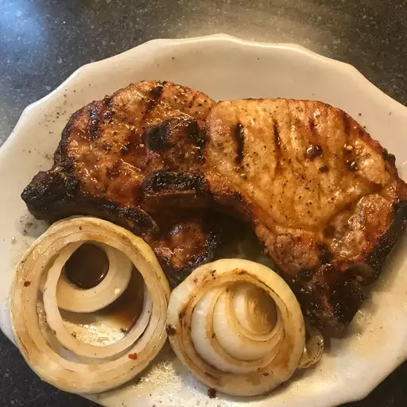

Soy and Honey Pork Chops

Grilled pork chops brushed with a honey and soy sauce mix. To round out the meal, serve with creamy chive and garlic mashed potatoes.
Ingredients
- 1/2 cup honey
- 1/4 cup soy sauce
- 1 pinch crushed red pepper flakes
- 1 pinch freshly ground black pepper
- 4 center-cut boneless pork chops, 1/2 inch thick
- 2 tsp canola oil
- 1 large sweet onion
- salt to taste
Steps
- Preheat an outdoor grill for high heat, and lightly oil the grate.
- Mix honey, soy sauce, crushed red pepper flakes, and black pepper in a bowl. Pour about 2 tablespoons of the honey-soy mixture into a small bowl and save for later. Brush chops with canola oil on both sides, and sprinkle with salt and black pepper.
- Grill the chops on the hottest part of the grill until lightly charred and crusty, 4 to 5 minutes per side. Move the chops to a cooler area of the grill, and continue to cook, brushing both sides generously with the honey-soy glaze, until chops are no longer pink inside, about 3 to 4 more minutes. The juices should run clear, and an instant-read meat thermometer inserted into the center of a chop should read at least 145 degrees F (63 degrees C).
- While chops are grilling, brush slices of onion with oil, and sprinkle with salt and black pepper. Grill onion slices until they are translucent and browned, 3 to 4 minutes per side. To serve, place chops and onions on warmed plates, and brush the chops with the reserved honey-soy glaze.